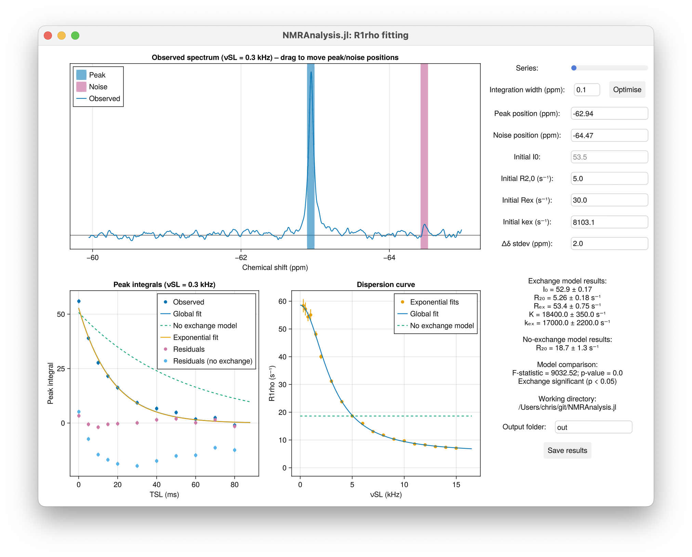

Tutorial: R1ρ Analysis
This tutorial walks through the graphical interface for analysing R1ρ relaxation dispersion data. It covers GUI controls, fitting workflow, and interpretation of results.
GUI Overview
Once launched, the GUI displays the first spectrum of the dataset.

- Series Toggle: Switch between measurements at different spin-lock field strengths.
- Integration Width: Manually input a value or click Optimise to automatically minimize fitting error.
- Peak Position (ppm): Automatically set to the chemical shift of a ligand; manually adjust accordingly if analsying a mixture.
- Noise Position (ppm): Automatically placed away from the peak; adjust if baseline noise is misestimated.
- Initial Guesses: Provide starting values for
R2,0,Rex, andkexto guide model fitting. - Δδ stdev (ppm): Accounts for uncertainty in the chemical shift difference between free and bound states. Assumes a normal distribution centered at 0 ppm with a standard deviation of 2 ppm.
- Output Folder: Specify a name for your results folder to keep outputs organised.
- Save Results: Export fitted parameters and plots to the output folder.
Analysis Workflow
1. Visualise the Spectrum
- The top panel displays the observed spectrum at a given spin-lock field strength ($ν_{SL}$).
- Peak and noise positions are marked and can be adjusted by dragging.
- Set the Integration Width to define the region used for peak fitting.
2. Fit the Data
- Click Optimise to refine the integration width automatically.
- Input initial guesses for model parameters:
R2,0: Baseline transverse relaxation rateRex: Exchange contribution to relaxationkex: Exchange rate constant
- The GUI fits the data and overlays model curves on the plots.
3. Interpret the Results
📊 Peak Integrals
Signal intensities are fit globally as a function of relaxation time and spin-lock field strength:
$
I(T{\text{SL}}, \nu{\text{SL}}) = I0 \cdot \exp\left(-\left[R{2,0} + \frac{R{\text{ex}} \cdot K^2}{K^2 + 4\pi^2 \nu{\text{SL}}^2}\right] \cdot T_{\text{SL}}\right) $
Adapted from Trott & Palmer (2002), J. Magn. Reson. 154, 157–160.
Where:
$
K^2 = k_{\text{ex}}^2 + 4\pi^2 \Delta\nu^2 $
To assess whether exchange contributes significantly, a null model excluding Rex is also fit and compared using an F-test.
📈 Dispersion Curve
The GUI plots $R_{1ρ}$ as a function of $ν_{SL}$ using fitted parameters:
$
R{1\rho} = R{2,0} + \frac{R{\text{ex}} \cdot K^2}{K^2 + 4\pi^2 \nu{\text{SL}}^2} $
This curve is overlaid with $R_{1ρ}$ values obtained from exponential fits at individual spin-lock field strengths, enabling visual comparison of model performance.
🔁 Kex Correction
To account for uncertainty in the chemical shift difference ($Δδ$), a particle-based Monte Carlo correction is applied to $K$. For each particle, $k_{\text{off}}$ is calculated as:
$
k{\text{off}} \approx k{\text{ex}} = \sqrt{K^2 - 4\pi^2 \Delta\nu^2} $
Samples yielding nonphysical values are excluded, and the final estimate is reported as the mean ± standard deviation of valid particles.